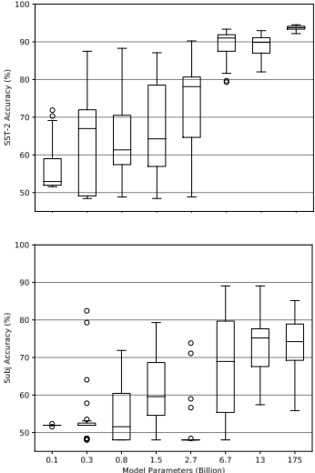
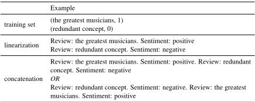
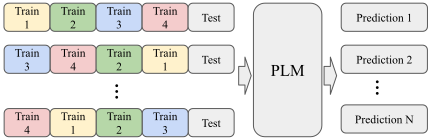
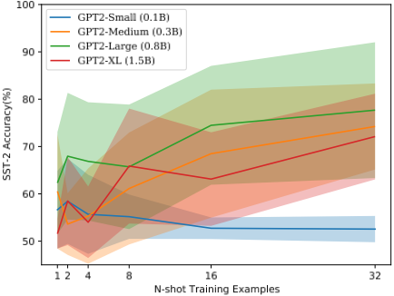
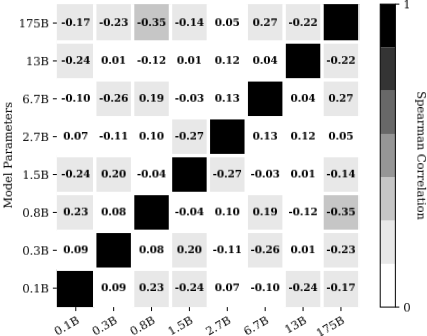
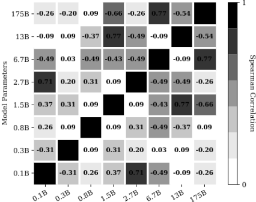
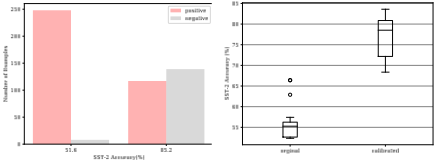
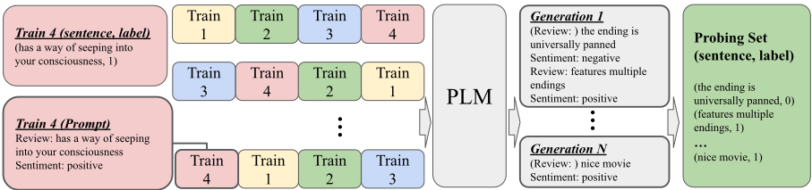
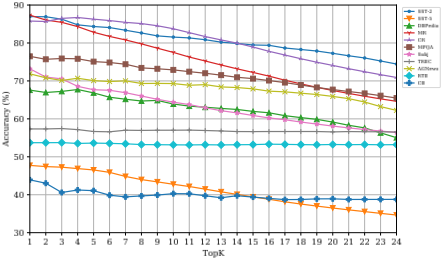

奇妙的有序提示及其寻找之道：克服 Few-Shot 提示的顺序敏感性
论文研究 In-context Learning 中少样本示例排列顺序对性能的巨大影响：同一组样本仅改变顺序，GPT 系列模型的表现即可从接近监督训练水平跌至接近随机猜测。作者系统分析发现，该顺序敏感性跨模型规模普遍存在、增加样本数也无法消除，且好的排列不可跨模型迁移。为此提出无需额外标注的自动选择方法：利用模型的生成能力，以每个候选排列为上下文采样构造人工 probing set，再基于预测标签分布的全局熵与逐样本熵对候选提示排序，选出 top-4 排列。在 11 个文本分类任务上，GlobalE 平均带来 13% 相对提升且方差显著更低，对低方差任务无负面影响。对团队而言，这是提示工程中示例组织与自动优选的经典方法，可直接纳入少样本提示的构建与验收流程。
In-context Learning 中，提示内训练样本的排列顺序会极大影响模型性能——同一组样本换一种顺序，表现可从接近 SOTA 跌到随机猜测水平，而此前没有工作系统研究过这一顺序敏感性。论文要解决的问题是：在不依赖额外标注开发集（符合 true few-shot 设定）的前提下，自动找出高性能的样本排列。
首先做系统性分析：在 GPT-2（0.1B–1.5B）与 GPT-3（2.7B、175B）上枚举 4-shot 样本的全部 24 种排列，发现高性能排列不可跨模型迁移、增加样本数不能消除方差、坏提示普遍表现为预测标签分布高度不均衡、校准也无法消除方差。方法上分三步： 对随机抽取的训练样本用模板线性化，枚举所有排列作为候选提示； 以每个候选排列为上下文，从语言模型本身采样生成无标注的人工开发集； 用 GlobalE（probing set 上预测标签分布的全局熵）与 LocalE（逐样本预测熵的均值）对候选排列打分排序，选 top-4 作为最终提示，全程不需要真实标注数据。
GlobalE 在 11 个文本分类任务上平均带来 13% 相对提升；LocalE 平均带来 9.6% 相对提升，且所选提示的方差显著更低
对高提示方差的任务，提示选择最多带来 30% 相对提升；对低方差任务无负面影响，最差也只是边际提升
GlobalE 使 GPT-3 175B 在 CB 任务上提升 4.9%
顺序敏感性跨模型普遍存在：同一排列准确率从 GPT2-XL 的 88.7% 降至 GPT2-Large 的 51.6%；175B 与 2.7B 模型排列性能的 Spearman 相关仅 0.05
增加训练样本数不能显著降低方差，作者据此认为顺序敏感性是 In-context Learning 的基本问题
熵探测排序优于把 4-shot 训练样本对半拆分作验证集的提示选择方式，且对 4 种不同模板均有效
GPT2-XL 仅用 4 个样本在 SST-2 上可超过 90% 准确率，可比肩 6 万余样本的监督训练
此前提示设计工作（手工模板、自动模板搜索等）均聚焦提示的文本质量，据作者所知没有工作研究样本顺序的影响；与 Liu et al. (2021) 基于检索选择样本后得出'顺序影响很小'的结论相反。方法上不依赖真实开发集，利用模型生成能力自采样构造 probing set，用熵统计实现 true few-shot 设定下的自动提示选择。
相关度级别：high
命中能力域：3.2 提示工程 | 3.1 上下文工程与记忆
理由：直接命中 3.2 提示工程：论文核心是 In-context Learning 的提示构成（示例顺序）与自动提示优选（熵探测排序），属于提示技术与自动提示优化的核心技术问题；少样本示例在上下文中的组织排列也触及 3.1 的结构化上下文组织。对'把模型用好而非训练模型'的团队，这既是构建少样本提示时必须正视的可靠性风险（顺序导致随机级波动），也是可直接复用的无标注自动化选择手段。
建议动作：深入精读并做内部分享
arXiv:2104.08786v2 [cs.CL] 2022年3月3日
Yao Lu † Max Bartolo † Alastair Moore ‡ Sebastian Riedel † Pontus Stenetorp † † 伦敦大学学院 ‡ Mishcon de Reya LLP
{yao.lu,m.bartolo,s.riedel,p.stenetorp}@cs.ucl.ac.uk
alastair.moore@mishcon.com
当仅使用少量训练样本进行引导时，诸如 GPT-3 这类超大规模预训练语言模型与经过全监督微调的大型预训练语言模型相比，已展现出具有竞争力的结果。我们证明，样本提供的顺序会造成接近最先进水平与随机猜测水平之间的性能差异：从本质上讲，某些排列是“神奇的”（fantastic），而某些则不是。我们详细分析了这一现象，并确立了以下几点：该现象存在于各种模型规模之中（即使对于当前最大的模型也是如此）；它与特定的样本子集无关；并且对某一模型而言的良好排列无法迁移到另一模型。虽然可以使用开发集来确定哪些排列表现优异，但这会偏离真正的少样本（few-shot）设定，因为它需要额外的标注数据。相反，我们利用语言模型的生成特性构建了一个人工开发集，并基于候选排列在该集合上的熵统计量，识别出表现优异的提示（prompt）。我们的方法在十一个不同的公认文本分类任务上，为 GPT 系列模型带来了 13% 的相对提升。
大型预训练语言模型（PLMs，Devlin et al., 2019; Peters et al., 2018; Raffel et al., 2020; Liu et al., 2019; Yang et al., 2019; Radford et al., 2019）在以适当的文本上下文为条件时，已展现出卓越的性能（Petroni et al., 2019, 2020; Jiang et al., 2020; Shin et al., 2020; Davison et al., 2019）。例如，当以一篇长文档和一个"TL;DR:"标记为条件时，它们可以生成该文档的摘要；当提供一个不完整的问题（"The theory of relativity was developed by __"）时，它们可以生成正确答案。最引人注目的或许是，当以仅由极少量训练样本构成的上下文作为引导时，它们产生的文本分类结果可以与全监督模型的结果相媲美。这种少样本（few-shot）设定通常被称为“上下文学习”（In-context Learning）（Brown et al., 2020）。

上下文学习的核心组成部分是作为上下文的基于文本的提示（prompt）。构建一个提示需要：(i) 使用模板进行文本线性化；以及 (ii) 训练样本拼接（示例见表 1）。已有研究表明，模板的结构对性能有很大影响（Shin et al., 2020; Gao et al., 2020; Schick and Schütze, 2020; Jiang et al., 2020）。然而，据我们所知，尚无工作研究样本排列顺序对上下文学习性能的影响。
或许有悖直觉，我们发现正确的样本顺序所能带来的差异与正确的模板一样大。如图 1 所示，某些排列在情感分类任务上的性能（超过 85% 的准确率）可与监督训练相媲美，而另一些排列的性能则接近随机水平（约 50%）。这种顺序敏感性在不同模型间普遍存在，尽管增大模型规模能在一定程度上缓解这一问题，但对于拥有数十亿参数的模型，在某些文本分类任务（图 1 中的 Subj）上该问题依然存在。

| Example | |
|---|---|
| training set | (the greatest musicians, 1) (redundant concept, 0) |
| linearization | Review: the greatest musicians. Sentiment: positive Review: redundant concept. Sentiment: negative |
| concatenation | Review: the greatest musicians. Sentiment: positive. Review: redundant concept. Sentiment: negative OR Review: redundant concept. Sentiment: negative. Review: the greatest musicians. Sentiment: positive |
| | Example |
在我们的分析中，我们发现表现优异的样本顺序之间不存在共同特征，并且它们无法在不同模型规模和任务之间迁移。在全监督设定下，我们可以依靠开发集来在样本顺序中进行选择。然而，在少样本设定下这并不可取，因为开发集的规模非常有限，甚至可能不存在（Perez et al., 2021）。相反，我们利用语言模型的生成特性构建了一个无标注的人工开发集，并将其称为探测集（probing set）。由于探测集是无标注的，我们使用预测标签分布统计量，并提出基于熵的度量来衡量候选提示的质量。实验结果表明，在十一个不同的公认文本分类任务上，跨越所有不同规模（四个数量级）的 PLMs，我们平均可获得 13% 的相对提升。
总而言之，我们的贡献如下：

在广泛的一系列任务上取得 13% 的相对提升。
在本节中，我们研究排列性能与各种因素之间的关系。为了便于可视化，我们从 SST-2 数据集中选取了一个由四个样本组成的固定随机子集，其标签分布均衡，并考虑全部 24 种可能的样本顺序排列。该设置如图 2 所示。我们还在实验部分（第 5 节）中测试了五个随机选取的示例集合，并汇总了方差统计信息。
尽管有益，但增大模型规模并不能保证低方差 我们评估了四种不同规模的 GPT-2（0.1B-1.5B）¹ 和 GPT-3（2.7B-175B）的顺序排列。如图 1 所示，模型能够取得出色的少样本性能。可以看到，仅给定四个样本，GPT2-XL（1.5B）模型甚至能超过 90% 的准确率。这一结果可与在超过 60,000 个样本上训练的监督模型相媲美。然而，不同排列之间的性能差异仍然是一个大问题，尤其是对“较小”的模型而言。² 同一个模型在给定某一种样本顺序时可以表现出近乎完美的行为，而在另一种顺序下却会退回到与随机基线相当的水平。虽然增大模型规模（提升几个数量级）有时能缓解这一问题，但仍无法将其彻底解决（尤其是当我们考虑 SST-2 以外的任务时）。相比之下，监督微调方法的不同初始化通常使其测试集性能的标准差小于 1%（Gao et al., 2020）。
1 我们也可以将这些模型称为 GPT2-base、GPT2medium、GPT2-Large 和 GPT2-XL。
2 我们实验中最小的模型与 BERT-base 规模相同。

增加训练样本并不能显著降低方差 为了进一步探究少样本提示的顺序敏感性，我们增加了训练样本的数量，然后从中采样至多 24 种不同的顺序排列。³ 本实验使用 GPT2 系列模型。在图 3 中可以观察到，增加训练样本数量会带来性能的提升。然而，即使样本数量很大，方差仍然很高，甚至可能进一步增大。基于此，我们得出结论：无论训练样本数量多少，顺序敏感性都很可能是上下文学习（In-context Learning）的一个根本性问题。
高性能提示无法跨模型迁移 我们发现，当底层模型从 GPT2-XL（1.5B）更换为 GPT2-Large（0.8B）时，某一特定排列的性能可能从 88.7% 降至 51.6%。这表明，对某一模型效果良好的特定排列，并不意味着它对另一模型也能提供良好结果。为验证这一假设，我们使用四个样本的所有可能顺序排列作为提示——共 24 种。随后，我们针对不同模型，以这些提示中的每一种为条件进行预测，并计算各得分之间的两两 Spearman 秩相关系数。这些结果如图 4 所示。
如果高性能提示存在某种共同模式，那么我们应该能够观察到跨模型的高相关性。然而，即使是在同一模型的不同规模之间，各排列的表现也看似随机。例如，175B 模型与 2.7B 模型之间的相关性仅为 0.05，这意味着对 2.7B 模型而言的良好排列，完全无法保证它对 175B 模型也能带来良好性能。
3 下限由给定的样本总数所限定，上限则由最多可达 64! 种的可能顺序所限定。


高性能的标签排列在不同模型间并不一致 除了训练样本的排列之外，我们还探索了训练提示中的标签排列。我们使用上述全排列的所有模式——即六种不同的标签模式。4 随后，我们按照上一段所述方法，计算不同模型之间的两两 Spearman 相关性。如图 5 所示，标签排列的表现再一次在不同规模的同一模型之间看似随机。因此，无法确定一种在不同模型间都表现良好的标签排列。
4 NNPP、NPNP、NPPN、PNNP、PNPN、PPNN，其中 P/N 分别表示正/负

劣质提示的退化行为 我们对高性能提示与低性能提示进行了错误分析，观察到大多数失败的提示都存在预测标签分布高度不均衡的问题（图 6 左）。解决这一问题的一种直观方法是按照 Zhao et al. (2021) 的思路对输出分布进行校准。然而，我们发现尽管校准能带来高得多的性能，方差却依然很高（图 6 右）。
我们提出一种简单的方法，通过直接从语言模型本身采样来自动构建“探测集”（probing set）。这种方法使得无需访问任何额外数据即可自动生成探测集成为可能。具体而言，给定一组训练样本 S = { ( x i , y i ) } , i = 1 , · · · , n ，其中 x i 和 y i 表示第 i 个训练样本的句子和标签。随后我们定义一个变换 T，将每个样本映射到自然语言空间，使得 t i = T ( x i , y i ) 。因此，t i 是使用由 T 定义的模板的第 i 个训练样本的文本序列。在本工作中，我们使用一个简单的变换函数 T，使得 T ( x i , y i ) = input: x i type: y i 。这将每个样本转换为标准格式的句子，从而将集合中的每个元素线性化到自然语言空间中，定义为 S ′ = { t i } , i = 1 , · · · , n 。
然后，我们定义 n 个训练样本的全排列函数群 F = { f m } , m = 1 , · · · , n ! ，其中每个函数 f m 以 S ′ 为输入，并输出 c m：一个唯一排列的拼接。在我们的情形中，随机采样四个训练样本最多可得到 24 种变换后样本的顺序排列。
对于每个提示候选 c m ，我们从语言模型中采样以获得探测序列 g m ∼ P ( ·| c m ; θ ) ，其中 θ 表示预训练语言模型的参数。当生成由模板定义的特殊句末（end-of-sentence）标记时，或达到生成长度限制时，我们停止从语言模型解码。我们的探测集构建方法如图 7 所示，其目标是生成一个与训练样本具有相似分布的探测集。
我们对所有可能的提示顺序排列运行这一采样过程，并从中提取探测样本（ T - 1 ( g ) ）。然后将提取出的样本汇集在一起，构成探测集 D = T - 1 ( g 1 ) ⊕ ... ⊕T - 1 ( g n ! ) 。尽管探测集包含每个句子的预测标签，但无法保证这些标签的有效性。因此，我们将它们从探测集中丢弃，因为我们只关心从语言模型中采样与输入分布相对应的探测样本。
一旦我们为给定的样本集合构建了探测集，现在就可以利用该探测集来为该特定样本集合确定最佳的提示顺序排列。在此，我们探索两种

选择最佳排列的方法：全局熵（Global Entropy，GlobalE）和局部熵（Local Entropy，LocalE）。
全局熵（GlobalE） GlobalE 背后的动机是找出针对特定样本排列的、能够避免预测极度不平衡问题的提示（正如我们此前已确立的，这是表现不佳的提示的关键问题）。我们按如下方式计算数据点 ( x ′ i , y ′ i ) 在上下文 c m 下的预测标签 ˆ y i：
对于每个标签 v ∈ V（其中 V 表示目标标签集合），我们按如下方式计算其在探测集上的标签概率：
然后，我们使用预测类别标签的熵作为 c m 的 GlobalE 分数，如下所示：
局部熵（LocalE） LocalE 背后的动机是：如果一个模型对所有探测输入都过度自信，那么该模型很可能没有按预期方式运行。至少而言，它的校准不佳，这也可能表明其恰当区分类别的能力较差。与 GlobalE 的计算类似，我们按如下方式计算数据点 ( x ′ i , y ′ i ) 在上下文 c m 下相对于目标标签 v ∈ V 的预测概率：
然后，我们计算每个数据点的平均预测熵作为 LocalE 分数：
既然我们现在有了一种基于提示排列在探测集上产生的效果来为其打分的方法，我们就可以分别依据 GlobalE 或 LocalE 所度量的性能对每个提示排列进行排序。
我们使用四种不同规模的 GPT-2（Radford et al., 2019）（参数量分别为 0.1B、0.3B、0.8B 和 1.5B）以及两种规模的 GPT-3（Brown et al., 2020）（参数量分别为 2.7B 和 175B）。由于上下文窗口大小有限（GPT-2 系列模型最多支持 1024 个 word-pieces），除 AGNews 和 DBPedia 外，我们对所有数据集均采用 4-shot 设置。我们的实验基于 GPT-2 模型的开源检查点（checkpoint）以及对 OpenAI GPT-3 API 的访问。5 在探测集生成方面，我们将最大生成长度限制为 128。我们还使用温度 t 为 2 的采样，并利用块级 n-gram 重复（block n-gram repetitions）（Paulus et al., 2018）来鼓励多样化的生成。
对于每组随机选取的训练样本，我们使用 24 种不同的排列，并且每个实验使用 5 个不同的样本集（GPT-3 175B 参数版本除外，由于高昂的资金成本，我们仅使用 12 种不同排列进行两组实验），总计 120 次运行。我们报告相应评估指标在这 5 个不同样本集上的均值和标准差。
为了进行高性能提示（performant prompts）选择，我们使用 LocalE 和 GlobalE 探测指标在自动生成的探测集上对候选提示进行排序。然后，我们从可用的 24 种排列中选取按最高熵值排名的前 k 个样本作为高性能提示，在我们的实验中 k = 4。最后，我们使用这些高性能提示在各种数据集上评估性能，并展示了更优的性能与更低的方差。我们还提供了多数类基线（majority baseline）的结果作为性能下界，该基线总是预测数据集中的多数标签。我们还提供了一个 oracle，通过基于提示在验证集上的性能选取前四个高性能排列，来展示性能的上界。
5 https://openai.com/api/
| SST-2 | SST-5 | DBPedia | MR | CR | MPQA | Subj | TREC | AGNews | RTE | CB | |
|---|---|---|---|---|---|---|---|---|---|---|---|
| Majority | 50.9 | 23.1 | 9.4 | 50.0 | 50.0 | 50.0 | 50.0 | 18.8 | 25.0 | 52.7 | 51.8 |
| Finetuning (Full) | 95.0 | 58.7 | 99.3 | 90.8 | 89.4 | 87.8 | 97.0 | 97.4 | 94.7 | 80.9 | 90.5 |
| GPT-2 0.1B | 58 . 9 7 . 8 | 29 . 0 4 . 9 | 44 . 9 9 . 7 | 58 . 6 7 . 6 | 58 . 4 6 . 4 | 68 . 9 7 . 1 | 52 . 1 0 . 7 | 49.2 4 . 7 | 50 . 8 11 . 9 | 49 . 7 2 . 7 | 50 . 1 1 . 0 |
| LocalE | 65.2 3 . 9 | 34 . 4 3 . 4 | 53 . 3 4 . 9 | 66 . 0 6 . 3 | 65.0 3 . 4 | 72 . 5 6 . 0 | 52 . 9 1 . 3 | 48 . 0 3 . 9 | 61 . 0 5 . 9 | 53.0 3 . 3 | 49 . 9 1 . 6 |
| GlobalE | 63 . 8 5 . 8 | 35.8 2 . 0 | 56.1 4 . 3 | 66.4 5 . 8 | 64 . 8 2 . 7 | 73.5 4 . 5 | 53.0 1 . 3 | 46 . 1 3 . 7 | 62.1 5 . 7 | 53.0 3 . 0 | 50.3 1 . 6 |
| Oracle | 73.5 1 . 7 | 38.2 4 . 0 | 60.5 4 . 2 | 74.3 4 . 9 | 70.8 4 . 4 | 81.3 2 . 5 | 55.2 1 . 7 | 58.1 4 . 3 | 70.3 2 . 8 | 56.8 2 . 0 | 52.1 1 . 3 |
| GPT-2 0.3B | 61 . 0 13 . 2 | 25 . 9 5 . 9 | 51 . 7 7 . 0 | 54 . 2 7 . 8 | 56 . 7 9 . 4 | 54 . 5 8 . 8 | 54 . 4 7 . 9 | 52 . 6 4 . 9 | 47 . 7 10 . 6 | 48 . 8 2 . 6 | 50 . 2 5 . 3 |
| LocalE | 75 . 3 4 . 6 | 31 . 0 3 . 4 | 47 . 1 3 . 7 | 65 . 2 6 . 6 | 70.9 6 . 3 | 67 . 6 7 . 2 | 66.7 9 . 3 | 53 . 0 3 . 9 | 51 . 2 7 . 3 | 51.8 1 . 0 | 47 . 1 4 . 2 |
| GlobalE | 78.7 5 . 2 | 31.7 5 . 2 | 58.3 5 . 4 | 67.0 5 . 9 | 70 . 7 6 . 7 | 68.3 6 . 9 | 65 . 8 10 . 1 | 53.3 4 . 6 | 59.6 7 . 2 | 51 . 1 1 . 9 | 50.3 3 . 7 |
| Oracle | 85.5 4 . 3 | 40.5 6 . 3 | 65.2 7 . 6 | 74.7 6 . 1 | 80.4 5 . 4 | 77.3 2 . 3 | 79.4 2 . 4 | 63.3 2 . 9 | 68.4 8 . 0 | 53.9 1 . 3 | 62.5 7 . 4 |
| GPT-2 0.8B | 74 . 5 10 . 3 | 34 . 7 8 . 2 | 55 . 0 12 . 5 | 64 . 6 13 . 1 | 70 . 9 12 . 7 | 65 . 5 8 . 7 | 56 . 4 9 . 1 | 56 . 5 2 . 7 | 62 . 2 11 . 6 | 53 . 2 2 . 0 | 38 . 8 8 . 5 |
| LocalE | 81 . 1 5 . 5 | 40 . 3 4 . 7 | 56 . 7 7 . 5 | 82 . 6 4 . 2 | 85 . 4 3 . 8 | 73 . 6 4 . 8 | 70.4 4 . 2 | 56 . 2 1 . 7 | 62 . 7 8 . 1 | 53 . 3 1 . 6 | 38 . 4 5 . 2 |
| GlobalE | 84.8 4 . 1 | 46.9 1 . 1 | 67.7 3 . 6 | 84.3 2 . 9 | 86.7 2 . 5 | 75.8 3 . 1 | 68 . 6 6 . 5 | 57.2 2 . 3 | 70.7 3 . 6 | 53.5 1 . 5 | 41.2 4 . 5 |
| Oracle | 88.9 1 . 8 | 48.4 0 . 7 | 72.3 3 . 3 | 87.5 1 . 1 | 89.9 0 . 9 | 80.3 4 . 9 | 76.6 4 . 1 | 62.1 1 . 5 | 78.1 1 . 3 | 57.3 1 . 0 | 53.2 5 . 3 |
| GPT-2 1.5B | 66 . 8 10 . 8 | 41 . 7 6 . 7 | 82 . 6 2 . 5 | 59 . 1 11 . 9 | 56 . 9 9 . 0 | 73 . 9 8 . 6 | 59 . 7 10 . 4 | 53 . 1 3 . 3 | 77 . 6 7 . 3 | 55 . 0 1 . 4 | 53 . 8 4 . 7 |
| LocalE | 76 . 7 8 . 2 | 45.1 3 . 1 | 83 . 8 1 . 7 | 78 . 1 5 . 6 | 71 . 8 8 . 0 | 78 . 5 3 . 6 | 69 . 7 5 . 8 | 53 . 6 3 . 1 | 79 . 3 3 . 7 | 56.8 1 . 1 | 52 . 6 3 . 9 |
| GlobalE | 81.8 3 . 9 | 43 . 5 4 . 5 | 83.9 1 . 8 | 77.9 5 . 7 | 73.4 6 . 0 | 81.4 2 . 1 | 70.9 6 . 0 | 55.5 3 . 0 | 83.9 1 . 2 | 56 . 3 1 . 2 | 55.1 4 . 6 |
| Oracle | 86.1 1 . 5 | 50.9 1 . 0 | 87.3 1 . 5 | 84.0 2 . 7 | 80.3 3 . 3 | 85.1 1 . 4 | 79.9 5 . 7 | 59.0 2 . 3 | 86.1 0 . 7 | 58.2 0 . 6 | 63.9 4 . 3 |
| GPT-3 2.7B | 78 . 0 10 . 7 | 35 . 3 6 . 9 | 81 . 1 1 . 8 | 68 . 0 12 . 9 | 76 . 8 11 . 7 | 66 . 5 10 . 3 | 49 . 1 2 . 9 | 55 . 3 4 . 4 | 72 . 9 4 . 8 | 48 . 6 1 . 9 | 50 . 4 0 . 7 |
| LocalE | 81.0 6 . 0 | 42 . 3 4 . 7 | 80 . 3 1 . 7 | 75 . 6 4 . 1 | 79 . 0 5 . 5 | 72 . 5 5 . 8 | 54 . 2 4 . 2 | 54 . 0 2 . 6 | 72 . 3 4 . 6 | 50 . 4 1 . 9 | 50 . 5 0 . 8 |
| GlobalE | 80 . 2 4 . 2 | 43.2 4 . 3 | 81.2 0 . 9 | 76.1 3 . 8 | 80.3 3 . 4 | 73.0 4 . 3 | 54.3 4 . 0 | 56.7 2 . 0 | 78.1 1 . 9 | 51.3 1 . 8 | 51.2 0 . 8 |
| Oracle | 89.8 0 . 7 | 48.0 1 . 1 | 85.4 1 . 6 | 87.4 0 . 9 | 90.1 0 . 7 | 80.9 1 . 4 | 60.3 10 . 3 | 62.8 4 . 2 | 81.3 2 . 9 | 53.4 3 . 1 | 52.5 1 . 4 |
| GPT-3 175B | 93.9 0 . 6 | 54 . 4 2 . 5 | 95 . 4 0 . 9 | 94.6 0 . 7 | 91 . 0 1 . 0 | 83 . 2 1 . 5 | 71 . 2 7 . 3 | 72 . 1 2 . 7 | 85 . 1 1 . 7 | 70 . 8 2 . 8 | 75 . 1 5 . 1 |
| LocalE | 93 . 8 0 . 5 | 56.0 1 . 7 | 95 . 5 0 . 9 | 94.5 0 . 7 | 91.3 0 . 5 | 83.3 1 . 7 | 75 . 0 4 . 6 | 71 . 8 3 . 2 | 85.9 0 . 7 | 71.9 1 . 4 | 74 . 6 4 . 2 |
| GlobalE | 93.9 0 . 6 | 53 . 2 2 . 1 | 95.7 0 . 7 | 94.6 0 . 2 | 91.7 0 . 4 | 82 . 0 0 . 8 | 76.3 3 . 5 | 73.6 2 . 5 | 85 . 7 1 . 0 | 71 . 8 1 . 9 | 79.9 3 . 3 |
| Oracle | 94.7 0 . 2 | 58.2 | 96.7 0 . 2 | 95.5 0 . 2 | 92.6 0 . 4 | 85.5 0 . 8 | 81.1 4 . 9 | 77.0 1 . 2 | 87.7 0 . 6 | 74.7 0 . 4 | 83.0 0 . 9 |
| | SST-2 | SST-5 | DBPedia | MR | CR | MPQA | Subj | TREC | AGNews | RTE | CB |
与先前的工作（Gao et al., 2020; Zhao et al., 2021）类似，我们使用了十一个文本分类数据集，范围涵盖从情感分类到文本蕴含（textual entailment）。有关这些数据集的更多细节见附录。为了进行评估，我们对所有数据集的验证集进行子采样，各抽取256个样本，以控制GPT-3的推理成本，因为其需要使用付费的API。
我们在表2中报告了实验结果，并观察到LocalE和GlobalE在所有任务上均取得了一致的提升。
我们发现，在十一个不同的句子分类任务上，GlobalE 相比未使用探测（probing）的提示平均取得了 13% 的相对提升。LocalE 的结果略逊于 GlobalE，相比基线模型平均取得了 9.6% 的相对提升。我们选出的高性能提示所展现的方差也显著低于使用全部候选提示时的方差。
在图 8 中，我们可视化了针对 top K 提示选择改变 K 时的平均性能。K = 24 对应于使用全部采样得到的提示顺序，这等同于表 2 中的基线模型性能。我们可以观察到，所有数据集上曲线的斜率均为负，这表明我们的方法能够有效地对高性能提示进行排序。尽管 K = 1 在大多数情况下都能提供良好的性能，但在我们的实验中，我们使用 K = 4，因为初步实验表明它在各数据集上均能带来稳定的性能。

基于熵的探测在不同模板下均有效 我们针对 SST-2 数据集，在四个不同模板上评估了基于熵的探测，这些模板与 Gao et al. (2020) 和 Zhao et al. (2021) 所使用的模板类似（表 4）。表 3 中的实验结果表明，基于熵的探测对不同模板均有效。我们还观察到，不同模板之间的随机性与第 2 节中的情况类似。这些发现表明，基于熵的探测对特定模板并不敏感，因为它在所有情况下都能持续带来提升。
高性能排列选择是上下文学习（In-context Learning）的安全选项 我们发现，对于受高提示方差困扰的模型，我们的提示选择过程能够带来大幅提升——相对提升最高可达 30%。此外，对于初始提示性能方差较低的任务，我们的方法不会对性能产生负面影响。我们的提示选择最坏情况下也能带来边际提升，而在大多数情况下平均可带来 13% 的相对提升。
即使采用高性能排列选择，句子对任务对较小规模模型而言仍然具有挑战性 对于 CB 和 RTE 数据集，GPT-2 模型的性能与随机基线并无显著差异。尽管如此，我们发现，我们用于识别高性能提示的方法仍能带来极小的性能增益，尽管这些增益仍处于随机猜测或多数投票的水平范围内。造成这种情况的一个原因可能是，对于这些任务上的这些特定规模的模型而言，并不存在好的提示。因此，在这种设置下，优化提示并不特别有效。在更大模型规模下，提示选择能够相当可观地提升 CB 和 RTE 上的性能（对于 GPT-3 175B 参数模型尤其如此），这一观察进一步支持了上述判断。事实上，我们发现使用 GlobalE 的提示选择使 GPT-3 175B 在 CB 上的性能提升了 4.9%。这表明，只要模型已经具备某种可通过提示设计加以改进的既有分类能力，我们的方法就广泛适用于所有模型规模和所有任务。
| Template 1 | Template 2 | Template 3 | Template 4 | |
|---|---|---|---|---|
| GPT-2 0.1B | 58.9 7 . 8 | 57.5 6 . 8 60.7 4 . 6 | 58.1 7 . 4 65.4 4 . 8 64.3 8 | 56.6 6 . 6 61.0 4 . 7 63.5 8 |
| LocalE | 65.2 3 . 9 | 63.9 11 . 3 | 68.3 11 . | |
| GlobalE | 63.8 5 . 8 | 59.0 2 . 9 | 4 . | 4 . |
| GPT-2 0.3B | 61.0 13 . 2 | 8 | 59.2 6 . 4 | |
| LocalE | 75.3 4 . 6 | 70.0 7 . 2 | 80.2 4 . 2 | 62.2 3 . 4 |
| GlobalE | 78.7 5 . 2 | 73.3 4 . 5 | 81.3 4 . 1 | 62.8 4 . 3 |
| GPT-2 0.8B | 74.5 10 . 3 | 66.6 10 . 6 | 70.3 10 . 5 | 63.7 8 . 9 |
| LocalE | 81.1 5 . 5 | 80.0 5 . 6 | 73.7 6 . 2 | 71.3 4 . 5 |
| GlobalE | 84.8 4 . 1 | 80.9 3 . 6 | 79.8 3 . 9 | 70.7 5 . 3 |
| GPT-2 1.5B | 66.8 10 . 8 | 80.4 7 . 6 | 54.5 7 . 9 | 69.1 10 . 5 |
| LocalE | 76.7 8 . 2 | 83.1 3 . 6 | 66.9 7 . 5 | 72.7 5 . 5 |
| GlobalE | 81.8 3 . 9 | 83.4 3 . 2 | 67.2 6 . 1 | 74.2 5 . 3 |
| | Template 1 | Template 2 | Template 3 | Template 4 |
| ID | Template | Label Mapping |
|---|---|---|
| 1 | Review: {Sentence} Sentiment: {Label} | positive/negative |
| 2 | Input: {Sentence} Prediction: {Label} | positive/negative |
| 3 | Review: {Sentence} Sentiment: {Label} | good/bad |
| 4 | {Sentence} It was {Label} good/bad |
| ID | Template | Label Mapping |
基于熵的探测（Entropy-based probing）优于使用训练数据子集进行调优。如果不依赖生成（generation），另一种提示选择方法可以是将（有限的）训练数据拆分以形成验证集。为了与该方法进行比较，我们将 4-shot 训练样本（与表 2 中的设置相同）对半拆分。然后，我们使用验证集性能选出表现最好的四个提示。如表 5 所示，该方法始终优于基线。然而，两种基于熵的探测方法在所有模型规模上都始终能提供更好的性能。
| GPT-2 0.1B | GPT-2 0.3B | GPT-2 0.8B | GPT-2 1.5B | |
|---|---|---|---|---|
| Baseline | 58 . 9 7 . 8 | 61 . 0 13 . 2 | 74 . 5 10 . 3 | 66 . 8 10 . 8 |
| LocalE | 65.2 3 . 9 | 75 . 3 4 . 6 | 81 . 1 5 . 5 | 76 . 7 8 . 2 |
| GlobalE | 63 . 8 5 . 8 | 78.7 5 . 2 | 84.8 4 . 1 | 81.8 3 . 9 |
| Split Training Set | 62 . 8 5 . 3 | 64 . 2 6 . 1 | 75 . 1 6 . 8 | 71 . 4 7 . 8 |
| | GPT-2 0.1B | GPT-2 0.3B | GPT-2 0.8B | GPT-2 1.5B |
**NLP 的统一接口设计** 以往的大多数工作聚焦于共享参数模型：先在某些任务上进行预训练，再针对不同任务进行微调，例如 ELMo（Peters et al., 2018）、BERT（Devlin et al., 2019）等，最终导致产生了多个任务特定的模型。一段时间以来，已有研究尝试为自然语言处理（NLP）任务设计统一接口（Kumar et al., 2016; Raffel et al., 2020）。与这些工作并行，GPT-2（Radford et al., 2019）表明，在语言模型输入的末尾附加触发词元（trigger tokens，例如 'TL;DR'）可以使语言模型表现得像摘要模型。语言模型的零样本（zero-shot）能力展示了将 NLP 任务统一到语言建模框架中的潜力，在该框架下无需微调即可获得良好性能。此外，GPT-3（Brown et al., 2020）表明，通过扩大语言模型的规模可以提升任务无关的少样本（few-shot）性能，有时甚至能与先前最先进的微调方法相媲美。
**预训练语言模型（PLM）的提示设计** 提示设计的核心挑战是将训练数据（如果存在）转换为文本序列。大多数关于提示设计的工作都聚焦于如何使提示与语言模型更加兼容。Petroni et al. (2019) 依靠人工设计自然语言句子，然后在给定输入上下文的条件下进行词元预测。然而，手工制作的模板需要大量人力投入，且很可能最终只能获得次优性能。近期工作探索了自动模板构建：Schick and Schütze (2020) 使用完形填空式（cloze-style）任务来构建模板，Gao et al. (2020) 使用外部语言模型来生成模板，Shin et al. (2020) 则使用梯度引导搜索来寻找能最大化性能的模板。Jiang et al. (2020) 使用基于挖掘的方法自动创建多个多样化的模板。
**提示设计的顺序敏感性** Gao et al. (2020) 证明，基于微调的方法不像上下文学习（In-context Learning）那样对顺序敏感。Liu et al. (2021) 利用标准规模的训练集，通过最近邻搜索为特定测试样本检索最相关的训练样本。他们成功检索到了相关样本，并得出结论：在检索之后，这些样本在提示中的提供顺序对性能几乎没有影响。尽管我们的研究与他们的研究存在根本差异——我们并未使用标准规模的训练集——但我们得出了与之相反的结论。以往所有关于提示设计的工作都聚焦于提示的文本质量，而据我们所知，尚无研究对顺序敏感性进行过详细探讨。
真少样本学习（True Few-shot Learning）Perez 等人（2021）在无法获得留出验证集的情况下评估了语言模型（LM）的少样本能力。实验结果表明，在这种（真少样本学习）设置下，先前的工作高估了语言模型的少样本能力。我们的工作则利用语言模型的生成特性来构建探测集，而无需依赖留出样本。我们证明了我们的探测方法优于依赖留出样本的方法（图 5），从而实现了真少样本学习。
我们已证明，少样本提示（few-shot prompts）存在顺序敏感性（order sensitivity），即对于同一个提示，样本提供的顺序不同，可能导致最先进水平与随机水平之间的性能差异。在对该问题的分析中，我们确认这一现象普遍存在于不同任务、不同模型规模、不同提示模板、不同样本以及不同训练样本数量的情况下。为缓解这一问题，我们提出了一种新颖的探测方法，该方法利用语言模型的生成特性来构建人工开发集。我们能够基于该集合使用基于熵的统计量来识别表现良好的排列，从而在十一个文本分类任务上平均取得 13% 的提升。